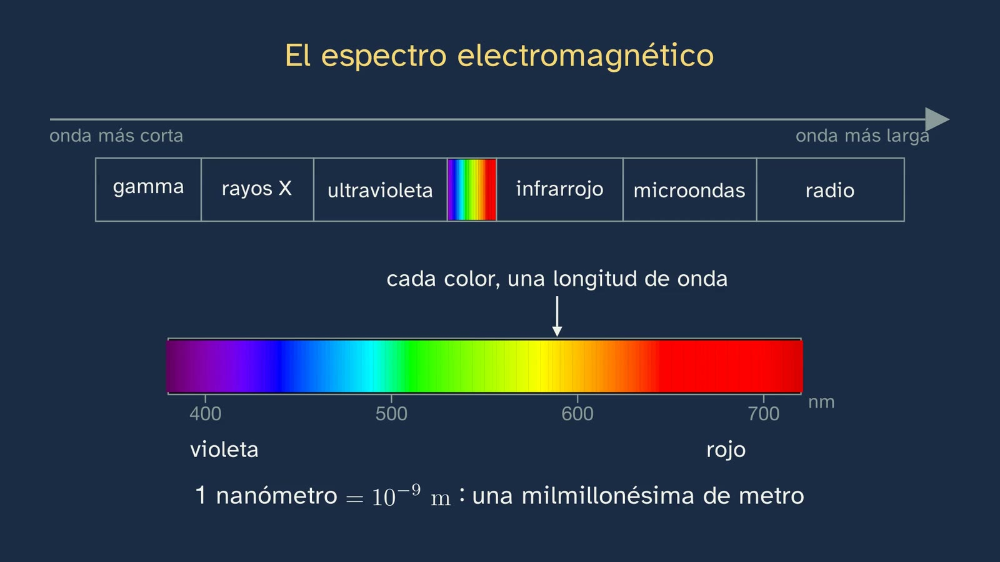
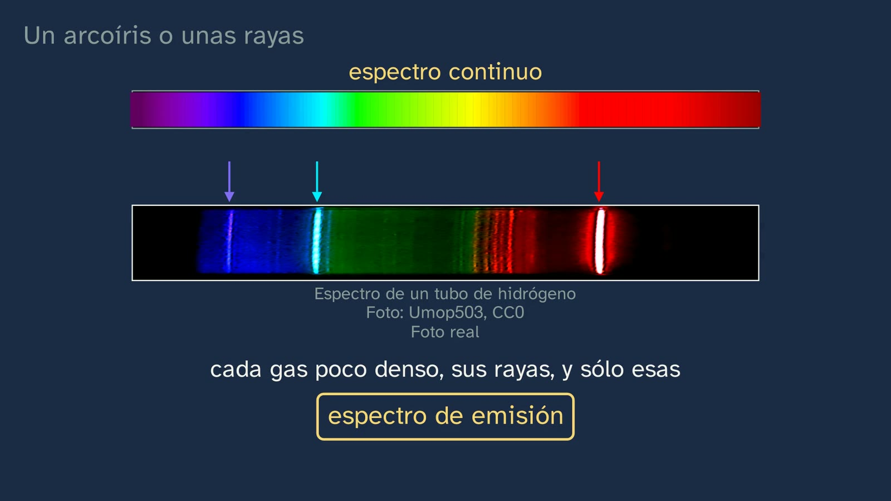
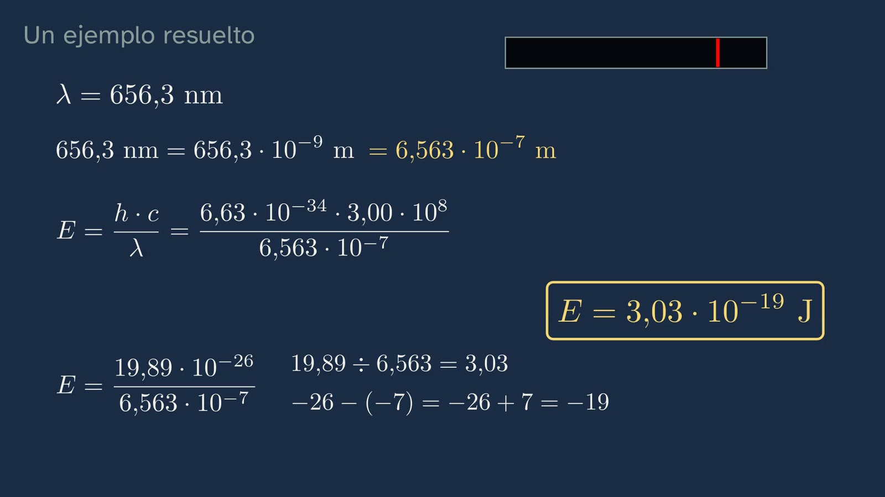
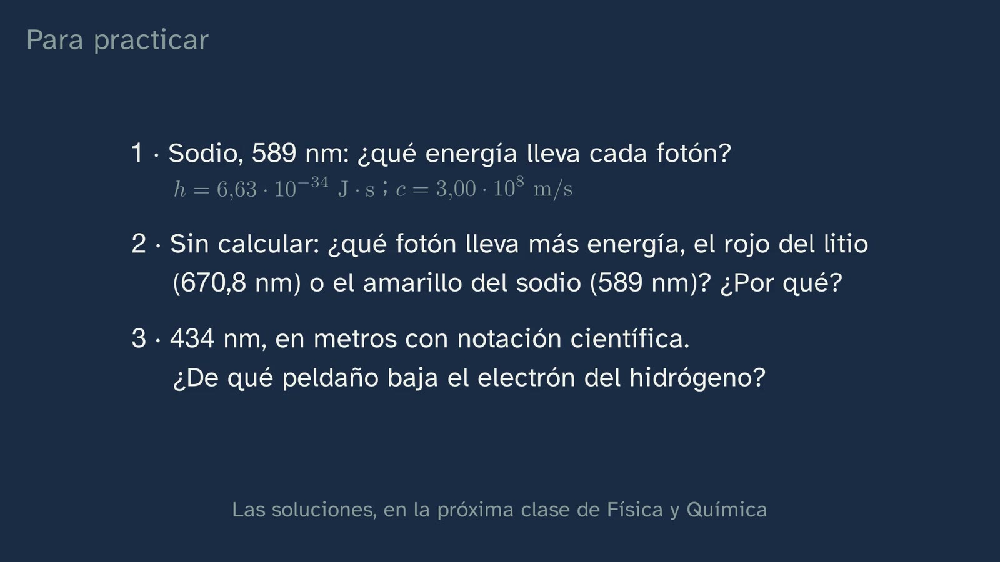
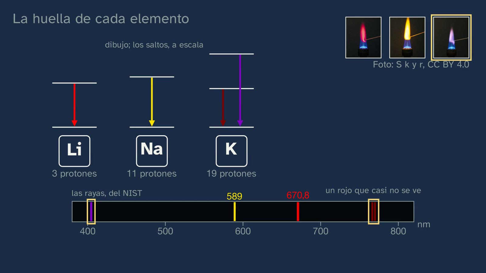

La luz que delata a cada elemento
En pocas palabras
Es la clase de teoría que explica lo que la clase 2 dejó a la vista en el laboratorio: por qué cada elemento da sólo ciertos colores, y cómo esa luz nos dice de qué están hechas cosas que nunca podremos tocar, como el Sol. Empieza recuperando los colores de la clase 2 y su enigma (el litio, el sodio y el potasio son de la misma familia y cada uno pinta la llama de un color) y corrigiendo los tres ejercicios. El gancho es una frase de Augusto Comte, de 1835: de los astros podríamos conocer la forma, la distancia, el tamaño y el movimiento, pero «jamás» su composición química. Para llevarle la contraria hace falta saber qué es la luz, y la clase lo enseña desde cero, porque la ESO común no lo garantiza: una onda, su longitud de onda y su frecuencia, c = λ·f leída y el espectro electromagnético, con la ventana visible de unos 400 a 700 nm. Llega el fenómeno, con predicción: un sólido muy caliente da un arcoíris continuo y el hidrógeno de un tubo, sólo unas rayas, su espectro de emisión. Bunsen y Kirchhoff montan en 1859 un espectroscopio, y con él se descubren el cesio, el rubidio y el galio de la clase 1. Después, la explicación en dos pasos: Planck y Einstein (la luz viaja en paquetes, los fotones, con E = h·f = h·c/λ), con un ejemplo resuelto entero, potencias incluidas, y otro con huecos, y el error típico, «más brillo, más energía», desmontado con la propia fórmula; y el átomo de Bohr, que sale del problema del átomo de Rutherford: el electrón sólo puede estar en ciertos peldaños, y cada salto hacia abajo suelta un fotón con justo la diferencia. Se leen los peldaños del hidrógeno, Eₙ = −21,8·10⁻¹⁹ J/n², y llega la prueba, el «¿cómo lo sabemos?» de la clase: de la escalera salen las cuatro rayas visibles del hidrógeno, 656, 486, 434 y 410 nm, y son las que se miden. Con su límite, el helio. El enigma se resuelve (cada elemento, su escalera) y se explica por qué un espectro de rayas es una huella y uno continuo no. La última parte es el camino al revés, la absorción: las rayas oscuras de Fraunhofer, el experimento de Kirchhoff que encuentra sodio en el Sol, el helio, visto en las protuberancias del Sol antes que en la Tierra y Cecilia Payne, que en 1925 calculó que las estrellas son sobre todo hidrógeno y helio y escribió que, casi seguro, no era real. Abril se despide con la frase que hay que recordar: cada elemento tiene su luz, y esa luz lo delata.
Objetivo. Al terminar, el alumnado sabrá explicar por qué cada elemento emite y absorbe sólo ciertos colores y relacionar cada raya de su espectro con el salto de un electrón entre dos niveles de energía del modelo de Bohr (E = h·f).
Lo que esta ficha añade. La clase va al grano, y lo que no responde a su pregunta está aquí: lo que simplifica, con su porqué (el continuo de los sólidos, el resplandor del tubo de hidrógeno, por qué la absorción se dibuja con sodio y no con hidrógeno, el helio ionizado, el lila del potasio); por qué con las constantes redondeadas una raya sale 411 nm y no 410; las soluciones de todas las preguntas y de los ejercicios; los errores que conviene esperar, uno de ellos medido con más de mil estudiantes; una actividad, «Rehaz la prueba de Bohr y lee la luz del Sol»; y recursos abiertos, varios en español, entre ellos el taller del espectroscopio casero del Instituto de Astrofísica de Canarias que usará la clase 4.
Las palabras. La voz habla de «peldaños» y los ata enseguida a su nombre, niveles de energía (11:22); un «salto» es una transición entre dos niveles, y una «raya», una línea espectral. Los «paquetes» de energía son los cuantos de Planck, y los de luz, los fotones de Einstein. Se nombran los tres espectros del libro: continuo (4:16), de emisión (4:56) y de absorción (18:31). Y el helio aparece en las protuberancias, «el gas que asoma por el borde del Sol» (19:59), no en «llamaradas»: en la astronomía en español, una llamarada solar es una fulguración, otro fenómeno (Comisión de Terminología de la Sociedad Española de Astronomía, 2023).
Currículo
Real Decreto 243/2022, Física y Química (texto consolidado del BOE, comprobado el 27/09/2026 para la ficha del tema; su última actualización, del 02/07/2026, no toca el anexo). Los minutos son los del vídeo.
| Elemento | Qué dice el decreto | Dónde se trabaja |
|---|---|---|
| Saber básico (bloque A, «Enlace químico y estructura de la materia») | «Estructura electrónica de los átomos tras el análisis de su interacción con la radiación electromagnética: explicación de la posición de un elemento en la tabla periódica y de la similitud en las propiedades de los elementos químicos de cada grupo.» | La primera mitad es el corazón de la clase: la interacción de la luz con los átomos, en la emisión (10:30 a 16:11) y en la absorción (18:31). La segunda mitad sólo se apunta, y hay que decirlo: el litio, el sodio y el potasio son familia por los electrones de su última capa, y eso, con la posición en la tabla, lo dan las clases 5 y 6 (16:57) |
| Competencia específica 1 | «Resolver problemas y situaciones relacionados con la física y la química, aplicando las leyes y teorías científicas adecuadas, para comprender y explicar los fenómenos naturales y evidenciar el papel de estas ciencias en la mejora del bienestar común y en la realidad cotidiana.» | Los colores de las llamas de la clase 2, explicados con E = h·f y con la escalera de cada elemento (16:17). Su descripción pide «comprender las interacciones que se producen entre cuerpos y sistemas en la naturaleza, analizarlas a la luz de las leyes y teorías fisicoquímicas»: es la luz que se emite y la que se absorbe |
| Competencia específica 2 | «Razonar con solvencia, usando el pensamiento científico y las destrezas relacionadas con el trabajo de la ciencia, para aplicarlos a la observación de la naturaleza y el entorno, a la formulación de preguntas e hipótesis y a la validación de las mismas a través de la experimentación, la indagación y la búsqueda de evidencias.» | Dos predicciones antes de ver (4:39 y 14:23); el postulado de Bohr, «una regla que se acepta si sus predicciones aciertan» (12:01), puesto a prueba con las rayas medidas (14:36 a 15:50). Su descripción: las hipótesis «ponen en evidencia las relaciones entre las variables que estudian en términos matemáticos» |
| Competencia específica 3 | «Manejar con propiedad y solvencia el flujo de información en los diferentes registros de comunicación de la ciencia como la nomenclatura de compuestos químicos, el uso del lenguaje matemático, el uso correcto de las unidades de medida, la seguridad en el trabajo experimental, para la producción e interpretación de información en diferentes formatos y a partir de fuentes diversas.» | Nanómetros y metros, julios y J·s, en notación científica (6:48 a 9:36); la escalera en 10⁻¹⁹ J, como las energías de los fotones (12:54); y tres formatos para una misma idea: la fórmula, la escalera y la tira del espectro (14:36). Y la seguridad, al mirar el Sol (21:11) |
| Criterio 1.2 | «Resolver problemas fisicoquímicos planteados a partir de situaciones cotidianas, aplicando las leyes y teorías científicas para encontrar y argumentar las soluciones, expresando adecuadamente los resultados.» | La energía de un fotón: el ejemplo resuelto (8:02), el de huecos (9:00) y los ejercicios 1 y 2 (21:56), el segundo, argumentado sin calcular |
| Criterio 2.3 | «Integrar las leyes y teorías científicas conocidas en el desarrollo del procedimiento de la validación de las hipótesis formuladas, aplicando relaciones cualitativas y cuantitativas entre las diferentes variables, de manera que el proceso sea más fiable y coherente con el conocimiento científico adquirido.» | El modelo de Bohr validado con las rayas del hidrógeno (14:02 a 15:50): una relación cuantitativa, la resta de dos peldaños, y una cualitativa, el salto más grande da la onda más corta. Y el límite: con el helio no sale (15:50). En la actividad de esta ficha, el alumnado rehace la prueba con su calculadora |
| Criterio 3.1 | «Utilizar y relacionar de manera rigurosa diferentes sistemas de unidades, empleando correctamente su notación y sus equivalencias, haciendo posible una comunicación efectiva con toda la comunidad científica.» | 656,3 nm = 6,563·10⁻⁷ m (8:02); la unidad de h (julios multiplicados por segundos), el hercio (uno partido por segundo) y por qué la energía queda en julios (7:11); un vatio es un julio cada segundo (7:48); el ejercicio 3 |
Lo que añade la actividad de esta ficha. El criterio 2.2, «Utilizar diferentes métodos para encontrar la respuesta a una sola cuestión u observación, cotejando los resultados obtenidos y asegurándose así de su coherencia y fiabilidad»: la misma raya, calculada con el modelo y medida en el laboratorio. Y el 3.3, «Emplear diferentes formatos para interpretar y expresar información relativa a un proceso fisicoquímico concreto…»: la escalera, la tabla y la tira del espectro del Sol.
Lo que hay que traer. De la ESO (Real Decreto 217/2022), de 1.º a 3.º: «Estructura atómica: desarrollo histórico de los modelos atómicos, existencia, formación y propiedades de los isótopos y ordenación de los elementos en la tabla periódica» (Física y Química), que es de donde viene el átomo de Rutherford de 10:30; y «Números grandes y pequeños: notación exponencial y científica y uso de la calculadora» (Matemáticas), que la clase usa sin parar. La luz como onda, en cambio, sólo está en 4.º, que es de opción («La luz y el sonido como ondas que transfieren energía»), y por eso la clase la enseña desde cero (2:39). En ese mismo 4.º están «los principales modelos atómicos clásicos y cuánticos»: parte del alumnado habrá oído hablar ya de Bohr. De las clases 1 y 2: la familia del litio, el sodio y el potasio, sus colores y el enigma; el galio, descubierto por una raya violeta («de esa luz hablaremos en la tercera clase», prometió la clase 1, y esta lo cumple en 5:40); y el mechero de Bunsen.
Cómo está construida la clase
Capítulos del vídeo
Unos veintidós minutos y medio (23:15), en catorce capítulos, con un hilo: recuperar y corregir; la pregunta de Comte; la herramienta, la luz; el fenómeno, las rayas; la explicación, en dos pasos, el fotón y la escalera; la prueba; el enigma resuelto; y la luz del Sol. Sigue las bases formativas del canal y el modelo del departamento: predecir, observar y explicar, y los modelos, con sus límites. Tiene tres paradas para leer una ecuación (c = λ·f, 3:35; E = h·f, 7:36; Eₙ, 13:15) y una cuarta para pensar lo que enseña la historia de Payne (21:06). Abril sale a cámara cuatro veces, unos veinte segundos en total: al saludar (0:00), con el gancho (2:00), a mitad (16:11) y al despedirse (23:09).
| Capítulo | Qué pasa | Por qué así |
|---|---|---|
| Qué vamos a ver (0:00) | Abril saluda. El mapa de las seis clases del tema, con la tercera resaltada: hoy, teoría, la explicación de los colores del laboratorio. | El tema 1 conserva su mapa numerado. Avisar de que hoy se explica lo que se vio cierra el ciclo de la clase de laboratorio. |
| Lo que ya sabes (0:22) | ¿Qué color dio cada sal? ¿Qué enigma nos dejó? Pausa (0:36). Rojo intenso, amarillo anaranjado y lila pálido: misma familia, colores distintos. | Recuperar justo lo que hoy se explica. |
| Las soluciones de la clase anterior (0:58) | Las cuatro llamas; el experimento del litio, cambiando una sola cosa cada vez; el rubidio y el cesio, sin regla a simple vista y descubiertos por su luz. | Breves, y la tercera abre la historia de hoy. |
| «Jamás» (2:00) | El gancho, a cámara: ¿se puede saber de qué está hecho el Sol sin ir? Comte, 1835, con su frase en francés, en pantalla, con obra y página (2:04). Veinticuatro años después, dos científicos alemanes le llevan la contraria, sólo con la luz (2:25). | Una pregunta que el alumnado no sabe contestar, y una predicción equivocada de un pensador serio. |
| La luz, una onda (2:39) | La cuerda: la onda viaja y el punto sólo sube y baja. Longitud de onda, frecuencia y v = λ·f, con un ejemplo de números (2:59). La luz, onda electromagnética, a 3,00·10⁸ m/s en el vacío; parada: si λ se acorta, f crece (3:35). El espectro electromagnético, con la ventana visible (3:43). | La herramienta, cuando hace falta y desde cero: la ESO común no la garantiza. |
| Un arcoíris o unas rayas (4:16) | El prisma con la luz de un filamento: espectro continuo. ¿Y con el hidrógeno de un tubo? Pausa (4:51). La foto real: unas pocas rayas sobre un resplandor débil, el espectro de emisión (4:56). El espectroscopio de Bunsen y Kirchhoff, 1859 (5:21). El cesio (1860), el rubidio (1861) y el galio (1875), descubiertos por sus rayas (5:40). | Predecir antes de ver. Lo que se ve es real, y lo dibujado se rotula como dibujo, con las rayas del NIST. |
| Paquetes de luz (6:19) | ¿Por qué sólo unas rayas? Planck (1900): la materia absorbe o suelta energía en paquetes, los cuantos; Einstein (1905): la luz misma, los fotones. E = h·f, cada letra con su unidad, y E = h·c/λ (6:48). Parada (7:36): doble frecuencia, doble energía; un vatio de luz amarilla son unos tres trillones de fotones por segundo. | El primer paso de la explicación. La fórmula se lee antes de usarla. |
| Un ejemplo resuelto (8:02) | La raya roja del hidrógeno, 656,3 nm: a metros, con la coma que corre y el exponente que sube; arriba, 6,63 · 3,00 y los exponentes que se suman; abajo, el que se resta: 3,03·10⁻¹⁹ J. El de huecos, la azul verdosa (9:00; pausa 9:18): 4,09·10⁻¹⁹ J (9:23). | Un ejemplo entero, con las potencias, que es lo que no sabe hacer solo un alumno de dieciséis años, y otro con huecos. |
| El error: «más brillo, más energía» (9:36) | Una luz roja muy intensa y una violeta débil: ¿cuál lleva fotones con más energía? Pausa (9:47). En h·f no aparece el brillo, sólo la frecuencia, que en la luz visible decide el color: la intensidad dice cuántos fotones llegan, y el color, cuánta energía lleva cada uno; un montón de monedas de un euro frente a una de dos; el efecto fotoeléctrico, en Física de 2.º. | El error típico, desmontado con la ecuación que se acaba de aprender. |
| La escalera de Bohr (10:30) | El átomo de Rutherford y su problema: una carga que gira suelta luz, el electrón caería en espiral hasta chocar con el núcleo, el colapso del átomo, y daría un arcoíris continuo (10:30 a 11:22). Bohr, 1913: sólo ciertas energías, los niveles; el hidrógeno tiene un solo electrón y muchos peldaños, que no son electrones sino las energías que puede tener (11:42); en un peldaño no suelta luz, así que no cae al núcleo: el átomo no se colapsa; un postulado (12:01). Los saltos y sus fotones (12:09). Eₙ = −21,8·10⁻¹⁹ J/n², escrita con 10⁻¹⁹, como las energías de los fotones (en los libros, −2,18·10⁻¹⁸ J/n²: es el mismo número), con los tres primeros peldaños dichos (12:39). Parada (13:15): dónde está el cero, por qué el signo menos, por qué se juntan; y la energía para arrancar el electrón, que Bohr sacó de la carga y la masa del electrón y de h, no de las rayas, y que coincide con la medida. | El modelo nace de un problema, no de la nada. La fórmula se lee, como pide la plantilla ante una ecuación. |
| ¿Cómo lo sabemos? (14:03) | Las rayas visibles son los saltos que acaban en el peldaño 2. ¿De qué color será el del 6 al 2? Pausa (14:31). Violeta. La resta del 3 al 2 da 3,03, el fotón rojo del ejemplo, y con λ = h·c/E, la raya de 656 nm; la del 4 al 2, 4,09, el de huecos (14:36); las cuatro rayas calculadas caen donde las medidas (15:28). Balmer (1885) tenía la fórmula; Bohr, el porqué. El límite: con el helio, no (15:50). | La prueba compara energías con cuentas que el alumnado ya ha hecho, sin exponerla al redondeo (véase «Preguntas y soluciones»). Y todo modelo, con su límite. |
| La huella de cada elemento (16:17) | Abril, a mitad (16:11): cada raya es un salto entre dos niveles. El enigma: un número distinto de protones y de electrones, y por eso su propia escalera, con los saltos dibujados a escala, y sus rayas del NIST: litio, 670,8 nm; sodio, dos rayas en 589; potasio, en los dos bordes de lo visible. Lo que tienen igual, la última capa: clases 5 y 6 (16:57). Para y piensa: ¿por qué un espectro de rayas es una huella y uno continuo no? (17:12; pausa 17:27). En un sólido, los peldaños se desdoblan; en un gas poco denso, son los de cada elemento (17:33). | La promesa de la clase 2, cumplida, y el porqué de la palabra «huella». |
| La luz del Sol (18:31) | La absorción: un gas más frío que lo que tiene detrás se traga los colores de sus saltos; el dibujo, con sodio. Fraunhofer (1814) y la pareja oscura del amarillo; Kirchhoff (1859), la luz del Sol a través de una llama con sal común, cloruro de sodio, y las rayas oscuras fabricadas en el laboratorio: hay sodio en el Sol (19:03). Raya a raya, el hierro, el calcio, el magnesio y el hidrógeno (19:43). El helio, una raya brillante en las protuberancias del borde del Sol, en el eclipse de 1868 (19:59). Payne, con las placas de Cannon (20:32). «Un dato bien medido puede tener razón contra lo que todos esperan», y el aviso: nunca mirar el Sol sin filtro homologado; su luz se mirará en la clase 4 apuntando al cielo, nunca al Sol (21:06). | La otra mitad del objetivo, «emite y absorbe», y la respuesta a Comte. Un «¿cómo lo sabemos?» con experimento, el de Kirchhoff. |
| Para practicar y seguir pensando (21:28) | Recapitulación; tres ejercicios (21:51; pausa 22:28); la pregunta abierta (22:31); la clase 4, el espectroscopio con un DVD (22:57); la despedida (23:09). | Las soluciones abren la clase 4. La pregunta abierta va también en los comentarios. |
Puentes con otras materias. Matemáticas I: la notación científica y las potencias del ejemplo, y el redondeo que convierte 410 en 411, que es justo el «¿Cuánto nos equivocamos?» del tema 2 de Matemáticas. Filosofía de 1.º: «El saber científico: definición, demarcación y metodologías científicas. La filosofía de la ciencia: naturaleza, problemas y límites del conocimiento científico» (B.1), para la frase de Comte, el postulado que se acepta si acierta y la pregunta abierta. Física de 2.º: la luz como onda electromagnética y el efecto fotoeléctrico; Química de 2.º: los espectros y «Del modelo de Bohr a los modelos mecano-cuánticos» (véase «Lo que la clase deja fuera»). Historia de la ciencia: el observatorio de Harvard, donde Annie Jump Cannon clasificó los espectros de las estrellas con los que trabajó Cecilia Payne.


Plan de una sesión de 50 minutos
Pensado para ver el vídeo entero en clase, a trozos, con la hoja del alumnado, y empezar la actividad. El vídeo dura unos veintidós minutos y medio; con las paradas, unos treinta.
| Minutos | Qué se hace |
|---|---|
| 0–4 | Sin vídeo, con la hoja: «Antes de ver el vídeo». Los colores del litio, el sodio y el potasio; qué saldrá de un prisma con la luz de un gas; 656,3 nm en metros. |
| 4–9 | Vídeo de 0:00 a 4:16 (de 0:58 a 2:00, las soluciones, sólo si no se corrigieron ya en el aula). Parar en 0:36 y contestar de palabra. |
| 9–12 | Vídeo de 4:16 a 6:19. Parar en 4:50: cada cual mira el dibujo que hizo antes de empezar, y lo cambia si quiere. |
| 12–18 | Vídeo de 6:19 a 9:23. Parar en 9:18 y hacer el ejemplo con huecos en la hoja (dos minutos), con calculadora. |
| 18–20 | Vídeo de 9:23 a 10:30. En la pausa de 9:47, votar a mano alzada. |
| 20–25 | Vídeo de 10:30 a 14:36. En 14:31, cada cual apunta su predicción. |
| 25–29 | Vídeo de 14:36 a 17:33. En la pausa de 17:27, en parejas, la huella. |
| 29–33 | Vídeo de 17:33 a 21:28. |
| 33–35 | Vídeo de 21:28 al final (23:15). Los ejercicios, para casa. |
| 35–48 | La actividad, parte A: «Rehaz la prueba de Bohr», en grupos (véase más abajo). |
| 48–50 | Puesta en común: ¿por qué a un grupo le salen 411 nm y no 410? La parte B, la luz del Sol, para otra sesión o para casa. |
Si hay poco tiempo, la actividad entera va a otra sesión, y en esta se dedica más tiempo a las paradas de 4:51, 14:31 y 17:27.
Lo que la clase simplifica, y por qué
La clase dice lo que hace falta para su pregunta, y lo dice con precisión. Pero simplifica, a propósito, varias cosas que un profesor de Física y Química conoce y que algún alumno preguntará.
- El espectro continuo de un sólido (17:33). La voz dice que en un sólido los átomos están tan apretados que sus peldaños «se desdoblan en muchísimos niveles casi pegados», y que el arcoíris «depende sobre todo de su temperatura». Es una imagen válida para 1.º, apoyada en dos ideas que da OpenStax por separado: en un sólido, los niveles forman bandas casi continuas (University Physics 3, 9.5), y la luz de un cuerpo caliente sigue, sólo aproximadamente, la curva del cuerpo negro, que fija la temperatura (University Physics 3, 6.1). Ninguna fuente que hayamos leído une las dos con esas palabras: es una simplificación. Y no todo lo denso es sólido: un gas muy denso o un gas de moléculas da bandas, no rayas, como el estroncio y el cobre de la clase 2 (véase la nota honesta de su ficha). Por eso la clase dice «un gas poco denso» (4:56 y 17:33), que es la condición de Kirchhoff.
- El resplandor de la foto del hidrógeno (4:56). Un tubo de descarga de hidrógeno no sólo tiene átomos: tiene sobre todo moléculas, H₂, que dan un espectro de muchísimas rayas juntas y un fondo débil. Es el resplandor del fondo de la foto, y las bandas rojizas entre la azul verdosa y la roja; el pie de la pizarra lo dice. Por eso la comparación de Bohr con lo medido (15:28) se hace con las rayas del NIST dibujadas, no con la foto, cuyas posiciones no están calibradas. Y por eso la voz nombra tres rayas, no cuatro: en la foto se ven la roja, la azul verdosa y una azul violeta, más débil, que es la de 434 nm; la cuarta, la violeta, de 410 nm, no sale (comprobación nuestra, con la escala de la tabla periódica de espectros del mismo autor, que alinea todas sus fotos a una escala común; la otra foto libre que hay, la del Stiftland-Gymnasium, tampoco la recoge). Es la más débil de las cuatro y está cerca del borde de lo que ven el ojo y la cámara. Las cuatro aparecen en las tiras dibujadas con los datos del NIST (12:09 y 14:36). Si un alumno cuenta las rayas de la foto y le salen tres, tiene razón.
- El tubo no brilla por estar caliente. La voz dice «al calentar un gas, o al pasarle una corriente» (12:09): en el tubo de descarga, los choques con los electrones de la corriente suben los electrones de los átomos a peldaños altos.
- Por qué la absorción se dibuja con sodio, y no con hidrógeno (18:31). Un gas absorbe sólo los saltos que salen del peldaño en que están sus electrones. El hidrógeno frío tiene el electrón en el peldaño 1, y desde ahí el salto más pequeño, al 2, pide un fotón ultravioleta de 121,6 nm: no absorbe ninguna de sus rayas visibles, que empiezan o acaban en el 2 (OpenStax, Astronomy 2e, 5.5). El sodio sí absorbe sus dos rayas amarillas, porque salen de su peldaño más bajo. En el Sol, la capa de fuera está lo bastante caliente para que haya átomos de hidrógeno en el peldaño 2, y por eso sus rayas salen oscuras; la temperatura que más las favorece es de unos 10 000 K (OpenStax, Astronomy 2e, 17.3). La condición para ver una raya oscura, desde Kirchhoff, es que la luz de detrás sea más intensa y su fuente más caliente que el gas (Kirchhoff, Researches on the Solar Spectrum, 1862, p. 17); por eso la voz dice «un gas más frío» que lo que tiene detrás, y no «un gas frío».
- Las rayas oscuras no son negras del todo. Si el electrón que se traga el fotón vuelve a bajar y suelta otro igual, ¿por qué no se compensa? Porque lo suelta en cualquier dirección, y sólo una pequeña parte sigue el camino del haz original hacia el observador (OpenStax, Astronomy 2e, 5.5; C. Seligman, Online Astronomy eText). Es una buena pregunta de alumno atento.
- El colapso del átomo de Rutherford (10:30). Es el nombre que le dan los libros (también «la inestabilidad del modelo de Rutherford»), y la clase lo usa. No hay que confundirlo con la «catástrofe ultravioleta», que es otro problema: la luz de los cuerpos calientes, que Planck resolvió en 1900. La voz dice que, al caer en espiral, la luz del electrón «cambiaría de color sin saltos», y la pizarra lo dibuja con los colores visibles. La idea es la buena: la frecuencia crecería sin parar, y eso no da rayas (Bohr, 1913, pp. 3–4). Pero, en rigor, un electrón que girara a la distancia de un átomo de hidrógeno en su estado normal radiaría, según la física clásica, a unos 6,6·10¹⁵ Hz, unos 46 nm, en el ultravioleta, y cada vez más arriba al caer (cálculo nuestro, con la mecánica clásica). El dibujo es un dibujo.
- Bohr y el helio (15:50). Con el helio neutro, de dos electrones, no le salían las cuentas, ni a él ni a los que lo intentaron hasta 1923 (OpenStax, Chemistry 2e, 6.2; Dictionary of Scientific Biography, «Kramers»). Pero con el helio ionizado, que ha perdido un electrón y tiene uno solo, Bohr sí acertó: en el mismo artículo de 1913 (pp. 10–11) explica así las series de rayas de Pickering y de Fowler, atribuyéndolas al helio. La voz dice «el helio, que tiene dos»: es exacto. Si un alumno pregunta, el modelo funciona con cualquier átomo de un solo electrón.
- La energía para arrancar el electrón (13:15). Bohr no sacó su número de las rayas: lo calculó con la carga y la masa del electrón y con h, y con los valores de 1913 le salió 3,1·10¹⁵ frente a los 3,29·10¹⁵ medidos (en sus unidades, por segundo; Bohr, 1913, p. 9). Con los valores de hoy da 13,6 eV, 21,8·10⁻¹⁹ J (2,18·10⁻¹⁸ J), y si se tiene en cuenta que el núcleo también se mueve un poco (la masa reducida), 13,598 eV, que es lo que mide el NIST. La voz dice «con sus valores de hoy, sale justo lo que se mide»: a tres cifras, es así.
- El signo menos. Que los peldaños tengan energía negativa sólo quiere decir que el cero se ha puesto en el electrón suelto, lejos del núcleo (OpenStax, Química 2ed, 6.2). Es una elección, como poner el cero de las alturas en el nivel del mar; lo que se mide son las diferencias.
- Las rayas, en el aire y en el vacío. El modelo da las longitudes de onda en el vacío (656,39; 486,21; 434,12 y 410,24 nm, con 13,6 eV); el NIST las da medidas en el aire (656,28; 486,13; 434,05 y 410,17 nm), un 0,03 % más cortas. En nanómetros enteros, las dos series dan 656, 486, 434 y 410, que es lo que dice la clase.
- El lila del potasio (16:17). La voz dice que el potasio da dos parejas de rayas, unas de un rojo tan oscuro que casi no se ve y otras violetas, en los dos bordes de lo que vemos, y que «por eso» su llama es de un lila tan pálido. Lo que no dice, a propósito, es que el lila sea «la mezcla» del rojo y del violeta: es una deducción razonable, pero no hemos encontrado ninguna fuente fiable que lo afirme; sólo webs de deberes sin autor (verificación de la clase). Si un alumno lo propone, vale como hipótesis, no como dato. Lo seguro: sus únicas rayas visibles son las de 766,5 y 769,9 nm y las de 404,4 y 404,7 nm (NIST), y Kirchhoff y Bunsen ya notaron en 1860 que, por estar en los bordes de lo visible, el ensayo del potasio es poco sensible.
- Por qué cada alcalino tiene su escalera (16:17). La voz dice que el litio, el sodio y el potasio tienen «un número distinto de protones y de electrones, y por eso su propia escalera», y no más: no dice cómo cambia la escalera con los protones, a propósito. Más protones no quiere decir fotones con más energía. El potasio, con 19 protones, da su raya fuerte a 766,5 nm (1,62 eV), con menos energía que el sodio, con 11 (589 nm, 2,10 eV), y que el litio, con 3 (670,8 nm, 1,85 eV). Los electrones de las capas de dentro tapan buena parte de la carga del núcleo, y el de fuera está cada vez más lejos (Chemguide, «First ionisation energy»; OpenStax, Química 2ed, 6.5). La pizarra dibuja los saltos de esas rayas a escala (0,7 unidades de pizarra por electronvoltio): el del sodio, el mayor; el del litio, después; el rojo del potasio, el menor, y encima, el violeta del potasio, el mayor de todos (3,07 eV). Lo que no está a escala es la altura de cada escalera: el peldaño de abajo de las tres se dibuja a la misma altura. El porqué del parecido de la familia queda para las clases 5 y 6.
- Lo que en 1.º no se da. Ni los números cuánticos ni el efecto fotoeléctrico: el decreto los pone en 2.º, con esas palabras (véase «Lo que la clase deja fuera»). La clase nombra el efecto fotoeléctrico como el experimento que demuestra que el brillo no cambia la energía de cada fotón (10:22), y nada más.


Errores típicos y cómo se tratan
Con una advertencia honesta: no conocemos ningún estudio que los haya medido con alumnado español de Bachillerato. Dos de ellos sí están medidos con más de mil estudiantes universitarios de ciencias, en Zagreb y en Seattle (Ivanjek, Shaffer, Planinić y McDermott, 2020, en abierto); los demás los prevé el diseño de la clase o los recoge la ficha del tema.
- «Más brillo, más energía»: una luz roja muy intensa lleva fotones más energéticos que una violeta débil. Es el error de la clase (9:36), con pausa, y se desmonta con la fórmula: en E = h·f no aparece el brillo. La intensidad dice cuántos fotones llegan; la frecuencia, que en la luz visible decide el color, cuánta energía lleva cada uno. La comparación de la clase, un montón de monedas de un euro frente a una de dos, respeta además la proporción: un fotón violeta de 410 nm lleva 1,6 veces la energía de uno rojo de 656 nm, y en todo el visible, de 400 a 700 nm, la proporción no pasa de 1,75. El montón puede sumar más dinero, pero cada moneda sigue valiendo un euro. Lo demuestra el efecto fotoeléctrico, en Física de 2.º: con más brillo salen más electrones, pero no con más energía (APS News, enero de 2005).
- «Las rayas las hace el prisma, o la rendija». En el estudio de Ivanjek y otros (2020), sólo un 30 % o menos de los estudiantes de los cursos introductorios eligió que lo único que convierte un espectro continuo en uno de rayas es cambiar la fuente de luz; muchos se lo atribuían a la rendija, al prisma o incluso a la distancia hasta la pantalla. La clase lo previene con el mismo dibujo dos veces (4:16): el mismo prisma, primero con un filamento y después con un tubo de hidrógeno. Lo que cambia es la fuente. Conviene preguntarlo así en clase: «si cambio el prisma por otro, ¿desaparecen las rayas?».
- «El arcoíris tiene siete colores». El mismo estudio describe la tendencia a tratar el espectro continuo como un número finito de colores: entre quienes creían que estrechar la rendija daría rayas, alrededor de un 20 % razonaba que así los colores se separarían unos de otros. La clase dice que cada color es una longitud de onda (3:43), y el arcoíris continuo de la pizarra no tiene cortes. Las rayas son lo contrario: unas pocas longitudes de onda, y nada entre ellas.
- «El electrón gira en una órbita, como un planeta». La clase habla de peldaños de energía, no de órbitas, y el modelo de Bohr se presenta como un modelo, con sus límites (15:50). El dibujo de órbitas, y lo que tiene de cierto y de falso, llega en la clase 5, con la idea honesta de orbital.
- «Una energía negativa no tiene sentido». El cero está puesto en el electrón suelto (13:15): atado, tiene menos energía que suelto. Véase «Lo que la clase simplifica».
- «Más protones, fotones con más energía». Es una deducción natural de «un número distinto de protones» (16:17). La pizarra la desmiente sin decirlo: el potasio, con más protones que el sodio, tiene el salto rojo más pequeño de los tres. Conviene preguntarlo: «¿por qué el potasio, con 19 protones, da un fotón rojo con menos energía que el sodio, con 11?». Véase «Lo que la clase simplifica».
- «Cualquier gas frío se traga sus colores», o «la raya oscura sale porque el gas se queda con la luz». Ni el hidrógeno frío absorbe sus rayas visibles, ni el gas se queda con la luz: la vuelve a soltar, en todas direcciones. Véase «Lo que la clase simplifica».
- «J·s son julios por segundo». Eso es un vatio, J/s, y la clase lo usa en 7:48. La voz dice «julios multiplicados por segundos» (7:11) para que no se confundan, y la pizarra lo escribe: «J·s: julios multiplicados por segundos». Y explica por qué la energía queda en julios: la frecuencia se mide en hercios, 1 Hz = 1/s, y J·s × 1/s = J.
- «Si el hidrógeno tiene un solo electrón, ¿por qué tiene seis peldaños?» Detrás está la idea de que cada peldaño es un electrón. La voz se adelanta a la duda (11:42): los peldaños no son electrones, sino las energías que puede tener ese único electrón, y está en uno cada vez, normalmente en el más bajo, el 1 (13:36). La pizarra dibuja seis porque bastan para las cuatro rayas visibles, pero hay muchos más, cada vez más juntos hacia el cero (13:31).

Preguntas y soluciones
Para y piensa (dentro del vídeo)
- En la clase anterior pusimos en una llama sales de litio, de sodio y de potasio. ¿Qué color dio cada una? ¿Y qué enigma nos dejó? (0:22; la pausa, en 0:36). Rojo intenso, amarillo anaranjado y lila pálido. El enigma: son de la misma familia, se parecen en casi todo, y cada uno pinta la llama de un color.
- ¿Y con la luz de un gas que brilla? Por ejemplo, el hidrógeno de un tubo por el que pasa una corriente eléctrica. ¿Qué crees que verás? (4:39; la pausa, en 4:51). No sale un arcoíris: salen unas pocas rayas de colores, con huecos oscuros entre ellas. Es una predicción: no hace falta acertar. Lo que interesa es qué esperaba cada cual, y por qué: quien dice «otro arcoíris» razona bien con lo que sabía de la luz blanca.
- La raya azul verdosa está en 486,1 nm. Pásalo a metros y calcula la energía de su fotón (9:00; la pausa, en 9:18). 486,1 nm = 486,1·10⁻⁹ m = 4,861·10⁻⁷ m. E = h·c/λ = (6,63·10⁻³⁴ · 3,00·10⁸) / 4,861·10⁻⁷ = 19,89·10⁻²⁶ / 4,861·10⁻⁷ = 4,09·10⁻¹⁹ J. Más que el rojo (3,03), porque su onda es más corta. Lo que saldrá: 4,861·10⁻¹¹ m, por restar mal los exponentes; y 4,09·10⁻³³ J, por no pasar los nanómetros a metros.
- Una luz roja muy intensa y una violeta muy débil: ¿cuál lleva fotones con más energía? (9:37; la pausa, en 9:47). La violeta: su frecuencia es mayor, y la energía de cada fotón sólo depende de la frecuencia. La roja lleva más fotones, y en total puede llevar más energía. Véase el error 1.
- ¿De qué color será el salto más grande que vemos, del seis al dos? (14:02; la pausa, en 14:31). Violeta: el salto más grande suelta más energía, y más energía es una onda más corta (410 nm). Para quien pregunte por el siete: del 7 al 2 sale una raya a 397 nm (397,0 en el aire, según el NIST), más débil y justo en el borde de lo que vemos; por eso se suele hablar de «las cuatro rayas visibles», aunque en la foto de la clase sólo salgan tres (véase «Lo que la clase simplifica»).
- ¿Por qué un espectro de rayas sirve de huella de un elemento, y uno continuo no? Explícalo con tus palabras (17:12; la pausa, en 17:27). Porque las rayas salen de los saltos entre los peldaños, y la escalera es propia de cada elemento: dos elementos distintos nunca tienen todas sus rayas en el mismo sitio. El arcoíris continuo de un sólido muy caliente sale casi igual sea de lo que sea, porque depende sobre todo de la temperatura. ¿Y un sólido, entonces? Se convierte en gas, en una llama o en una chispa, y da sus rayas: es lo que se hizo con las sales en el mechero de la clase 2. Criterios: que la respuesta diga de dónde salen las rayas (los peldaños) y por qué son de cada elemento; «porque son distintas» no explica nada. Y que nadie concluya que los sólidos no se pueden identificar por su luz.
Las paradas para pensar
- c = λ·f (3:35). Si la longitud de onda se acorta, la frecuencia crece, para que el producto siga dando c. Es la base de E = h·c/λ: más corta la onda, más energía.
- E = h·f (7:36). Doble frecuencia, doble energía. Y h es tan pequeña que un vatio de luz amarilla, un julio cada segundo, son unos tres trillones de fotones por segundo: 1 J / 3,37·10⁻¹⁹ J = 2,97·10¹⁸ (con 3,38, 2,96·10¹⁸). En español, un trillón es 10¹⁸. Por eso no notamos los paquetes.
- Eₙ = −21,8·10⁻¹⁹ J/n² (13:15). En los libros aparece como −2,18·10⁻¹⁸ J/n², con una sola cifra antes de la coma, que es la notación científica de manual: es el mismo número. La clase lo escribe en 10⁻¹⁹ J, como las energías de los fotones, para restar y comparar sin cambiar exponentes. Véanse «El signo menos» y «La energía para arrancar el electrón», en «Lo que la clase simplifica».
- Un dato bien medido puede tener razón contra lo que todos esperan (21:06). Payne escribió en su tesis que la enorme abundancia de hidrógeno y helio que le salía «is almost certainly not real» (Stellar Atmospheres, 1925, p. 188), y cuatro años después Russell llegó a lo mismo por otro camino y citó su trabajo. Para comentar sin salirse de la clase: que un resultado sorprenda no lo hace falso, y tampoco verdadero; lo que lo hace fiable es que se mida bien y que se repita por otro camino. Es lo mismo que hizo la clase con Bohr.
Para practicar (las soluciones abren la clase 4)
- La luz amarilla del sodio tiene 589 nm de longitud de onda; calcula la energía de cada fotón (h = 6,63·10⁻³⁴ J·s; c = 3,00·10⁸ m/s). 589 nm = 5,89·10⁻⁷ m. E = h·c/λ = 19,89·10⁻²⁶ / 5,89·10⁻⁷ = 3,38·10⁻¹⁹ J. Ojo, para no dar por mala ninguna de las dos: con las constantes del enunciado sale 3,38·10⁻¹⁹ J (3,377); con las constantes exactas, h = 6,626 070 15·10⁻³⁴ J·s y c = 299 792 458 m/s, sale 3,37·10⁻¹⁹ J (3,373). Las dos están bien: la diferencia está en la tercera cifra, y viene de redondear h y c. Un alumno que use las constantes de su calculadora o de su libro puede dar la segunda. Criterios: el paso a metros, en notación científica; la fórmula, E = h·c/λ; y la unidad, el julio. Lo que saldrá: el mismo error de exponentes que en el ejemplo con huecos; y usar 589 sin pasar a metros (3,38·10⁻²⁸ J, que no tiene sentido: es un fotón con mil millones de veces menos energía).
- Sin calcular, explica qué fotón lleva más energía, el rojo del litio (670,8 nm) o el amarillo del sodio (589 nm), y por qué. El del sodio. Su onda es más corta, así que su frecuencia es mayor (c = λ·f), y la energía de cada fotón crece con la frecuencia (E = h·f). Para quien quiera comprobarlo: el litio da 2,97·10⁻¹⁹ J (2,96 con las constantes exactas) y el sodio, 3,38·10⁻¹⁹ J: un 14 % más, porque 670,8 / 589 = 1,14. Criterios: que la explicación pase por la frecuencia o por E = h·c/λ, no sólo «porque es más corta». Lo que saldrá: «el rojo, porque 670,8 es mayor» (confundir longitud de onda con energía); y «el rojo, porque la llama del litio es más intensa», que es el error de la clase, otra vez. Espacia con la clase 2.
- Escribe 434 nm en metros, con notación científica, y explica de qué peldaño baja el electrón del hidrógeno para dar esa raya. 434 nm = 434·10⁻⁹ m = 4,34·10⁻⁷ m. Es la tercera raya visible, la azul violeta del peldaño 5 al 2 (14:36). Se puede comprobar con la escalera: −0,87 − (−5,45) = 4,58·10⁻¹⁹ J, y 19,89·10⁻²⁶ / 4,58·10⁻¹⁹ = 4,34·10⁻⁷ m. Criterios: la notación científica bien escrita (un solo dígito antes de la coma) y el salto completo, «del 5 al 2». Lo que saldrá: «434·10⁻⁹ m», que es correcto pero no es notación científica; «del 5», sin decir adónde; y «del 4 al 3», por pensar que cada raya es un peldaño y no un salto entre dos.

Las rayas con las constantes redondeadas: por qué sale 411 y no 410. La clase compara energías y, aunque dice que λ = h·c/E da la raya de cada una, no hace la división en voz, y lo hace a propósito: un alumno que, con las constantes de la pizarra, quiera rehacer las rayas obtendrá alguna con una cifra de diferencia. La causa es el redondeo, no el modelo. Las cuentas, ejecutadas:
| Salto | Con los saltos de la pizarra (3,03; 4,09; 4,58; 4,84), h = 6,63·10⁻³⁴ y c = 3,00·10⁸ | Con −21,8·10⁻¹⁹/n² sin redondear los saltos | Con las constantes exactas y 13,6 eV (en el vacío) | Medida, NIST (en el aire) |
|---|---|---|---|---|
| Del 3 al 2 | 656,4 nm → 656 | 656,9 nm → 657 | 656,39 nm | 656,28 nm |
| Del 4 al 2 | 486,3 nm → 486 | 486,6 nm → 487 | 486,21 nm | 486,13 nm |
| Del 5 al 2 | 434,3 nm → 434 | 434,5 nm → 434 | 434,12 nm | 434,05 nm |
| Del 6 al 2 | 410,9 nm → 411 | 410,6 nm → 411 | 410,24 nm | 410,17 nm |
Con tres cifras en h, en c y en el 21,8, el resultado no puede ser mejor que unas tres o cuatro cifras, y 411 frente a 410 es una diferencia de un 0,2 %. Rehecho con más cifras (h = 6,626·10⁻³⁴ J·s, c = 2,998·10⁸ m/s y −21,79·10⁻¹⁹ J en el peldaño 1), la del 6 al 2 da 410,2 nm. Es una buena lección de cifras significativas, y es la parte A de la actividad.
De la hoja del alumnado
- Antes de ver el vídeo. Los colores y el enigma, como arriba. Lo que saldrá del prisma con la luz de un gas es una predicción. Y 656,3 nm = 656,3·10⁻⁹ m = 6,563·10⁻⁷ m: es el primer paso del ejemplo de 8:02, hecho antes de oírlo.
- Mientras ves el vídeo. Son los para y piensa de arriba, en el orden del vídeo, y algunas más. Comte: que de los astros podríamos conocer la forma, la distancia, el tamaño y el movimiento, pero jamás su composición química; parecía razonable porque de una estrella sólo nos llega su luz, y él daba por hecho que la luz no podía decir más. Planck: la materia absorbe o suelta la energía en paquetes, los cuantos; Einstein: la luz misma viaja en paquetes, los fotones. El átomo de Rutherford: el electrón caería en espiral y su luz cambiaría de color sin saltos, así que ni el átomo duraría ni daría rayas. Un postulado: una regla que no se deduce de lo que ya se sabía, y que se acepta si sus predicciones aciertan. El hidrógeno tiene un solo electrón y muchos peldaños porque los peldaños no son electrones: son las energías que puede tener ese electrón, que está en uno cada vez (normalmente, en el más bajo). La tabla de la escalera: −21,8; −5,45; −2,42; −1,36; −0,87 y −0,61, en 10⁻¹⁹ J. Los peldaños 5 y 6 no se dicen en voz: se calculan, dividiendo entre 25 y entre 36. La tabla de las rayas: del 3 al 2, 3,03·10⁻¹⁹ J, roja, 656 nm; del 4 al 2, 4,09, azul verdosa, 486; del 5 al 2, 4,58, azul violeta, 434; del 6 al 2, 4,84, violeta, 410 (las energías de los dos últimos saltos tampoco se dicen: salen de restar peldaños). El modelo deja de funcionar con el helio, el átomo siguiente, que tiene dos electrones: el hidrógeno tiene uno solo, y con dos hay que tener en cuenta además cómo se repelen entre ellos (por qué exactamente falla es de 2.º; aquí basta con «tiene dos electrones»). Los saltos de los alcalinos, a escala: entre el rojo del litio, el amarillo del sodio y el rojo del potasio, el mayor es el del sodio, y encaja, porque su onda es la más corta de las tres (589 nm); el menor, el rojo del potasio (766,5 nm). El violeta del potasio (404 nm) es el mayor de todos. La absorción: un gas más frío que la luz que tiene detrás se traga los colores de sus propios saltos, y salen rayas negras justo donde ese gas, al brillar, da rayas de color. Fraunhofer vio las rayas oscuras del Sol y que una pareja del amarillo caía donde la llama de una lámpara da dos rayas brillantes; Kirchhoff hizo pasar la luz del Sol por una llama con sal, las rayas oscuras se marcaron más, las fabricó en su laboratorio y concluyó que hay sodio en el Sol. El helio: una raya amarilla brillante en las protuberancias, el gas que asoma por el borde del Sol, en el eclipse de 1868; meses después, Lockyer comprobó que no estaba en el sitio del sodio. Payne: que las estrellas tienen muchísimo más hidrógeno y helio que la Tierra, y escribió que casi seguro no era real.
- La actividad: sus soluciones, en «Una actividad para el aula».
- Para quien quiera más: la quinta raya. Del 7 al 2: E₇ = −21,8 / 49 = −0,445; salto, 5,45 − 0,445 = 5,005·10⁻¹⁹ J; λ = 19,89·10⁻²⁶ / 5,005·10⁻¹⁹ = 3,97·10⁻⁷ m, 397 nm. Está en el borde de lo que vemos (los bordes del visible no son nítidos: la CIE pone el inferior entre 360 y 400 nm), y el NIST la da a 397,0 nm, más débil que las otras cuatro. ¿Y del 8 al 2? Unos 389 nm, ya casi en el ultravioleta. Las rayas se juntan hacia un límite, unos 365 nm, porque los peldaños se juntan hacia el cero (13:15).
Para seguir pensando. Comte dijo «jamás», y se equivocó. ¿Hay preguntas que la ciencia no podrá responder nunca? ¿Y cómo sabríamos que una lo es? No tiene respuesta de libro, y ni el vídeo ni esta ficha dan la suya. Algunas pistas para orientar el debate sin cerrarlo:
- Qué falló en el razonamiento de Comte. Su argumento, en la misma página, era que todo lo que no se reduce a «simples observaciones visuales» nos está vedado en los astros. Confundió «hoy no sabemos cómo» con «nunca se podrá»: no imaginó que la propia luz, separada en sus colores, llevara escrita la composición. Es una pregunta para el alumnado: ¿qué otra cosa que hoy parece imposible de saber podría caer así?
- Lo que se puede responder y lo que no se puede ni plantear. Para Popper, una afirmación es científica si alguna observación posible podría refutarla (Stanford Encyclopedia of Philosophy, «Karl Popper»). Con ese criterio, hay preguntas que se quedan fuera de la ciencia no porque sean difíciles, sino porque ningún experimento podría decidirlas; muchas de ellas son de valores o de sentido. ¿Es eso un límite de la ciencia o una frontera con otros saberes?
- Límites demostrados. En matemáticas hay límites que no son de ignorancia, sino demostrados: Gödel probó en 1931 que en cualquier sistema de axiomas coherente que contenga la aritmética hay afirmaciones que no se pueden demostrar ni refutar dentro de él (Stanford Encyclopedia of Philosophy, «Gödel's Incompleteness Theorems»). Un ejemplo de cómo se puede saber que algo no se puede saber.
- El profesor modera y no da su veredicto. Las posturas razonables van de «no hay límites, sólo preguntas mal hechas» a «hay preguntas que nunca saldrán de la ciencia»; lo que vale es el argumento.


Una actividad para el aula
Rehaz la prueba de Bohr, y lee la luz del Sol (unos 30 minutos en dos partes, en grupos de tres o cuatro, con calculadora y la hoja del alumnado; trabaja la competencia 2 y los criterios 2.2, 2.3, 3.1 y 3.3). La parte A repite con las manos la prueba de la clase y termina en una lección de cifras significativas; la B usa la idea de la huella para leer, como Kirchhoff, de qué está hecho el Sol.
Parte A: rehaz la prueba de Bohr (unos 13 minutos).
- Reparto (1 minuto). Cada grupo se queda con un salto: del 3 al 2, del 4 al 2, del 5 al 2 o del 6 al 2. Si hay más grupos, se repiten saltos: así se podrán comparar resultados de un mismo salto.
- La cuenta (6 minutos). Con los peldaños de la pizarra (Eₙ = −21,8·10⁻¹⁹ J / n²), la energía del salto, y con ella la longitud de onda: λ = h·c / ΔE, con h·c = 6,63·10⁻³⁴ · 3,00·10⁸ = 1,989·10⁻²⁵ J·m. El resultado, en nanómetros, y su color.
- La comparación (3 minutos). Con la medida del NIST (en el aire): 656,28; 486,13; 434,05 y 410,17 nm. ¿Coincide?
- La pregunta fina (3 minutos). Al grupo del 6 al 2 le saldrá 411 nm. ¿Falla el modelo? Que repitan la cuenta con más cifras: h = 6,626·10⁻³⁴ J·s, c = 2,998·10⁸ m/s y −21,79·10⁻¹⁹ J en el peldaño 1.
Lo que se puede esperar. Del 3 al 2, 656 o 657 nm, según se redondee el salto antes o después; del 4 al 2, 486 o 487; del 5 al 2, 434; del 6 al 2, 411. Con más cifras, la del 6 al 2 da 410,2 nm (véase la tabla de «Preguntas y soluciones»). La conclusión que hay que sacar: con datos de tres cifras, el resultado no puede ser mejor que eso, y una diferencia de un 0,2 % no refuta un modelo; lo refutaría una raya que cayera lejos, como le pasó a Bohr con el helio. Es el puente con «¿Cuánto nos equivocamos?», en Matemáticas.
Parte B: lee la luz del Sol (unos 15 minutos, en otra sesión o en casa).
El material. En la hoja, una lista de rayas oscuras del Sol, con su longitud de onda: 422,7; 438,4; 486,1; 516,7; 517,3; 518,4; 527,0; 589,0; 589,6 y 656,3 nm (las letras de Fraunhofer g, e, F, b, E, D y C; longitudes de onda del NIST, en el aire). Y una tabla con las rayas de algunos elementos, medidas en el laboratorio (NIST): hidrógeno, 656,3, 486,1, 434,0 y 410,2; helio, 587,6; litio, 670,8; sodio, 589,0 y 589,6; magnesio, 516,7, 517,3 y 518,4; potasio, 766,5, 769,9, 404,4 y 404,7; calcio, 422,7; hierro, 438,4 y 527,0; estroncio, 460,7.
- Emparejar (6 minutos). ¿De qué elemento es cada raya oscura del Sol?
- Concluir (4 minutos). ¿Qué elementos hay, seguro, en la atmósfera del Sol? ¿Cuáles no aparecen en la lista?
- Discutir (5 minutos). ¿Demuestra la lista que en el Sol no hay litio ni potasio? ¿Por qué no aparece el helio, si su nombre viene del Sol?
Lo que se puede esperar. En la lista están el hidrógeno (656,3 y 486,1), el sodio (589,0 y 589,6), el magnesio (516,7, 517,3 y 518,4), el calcio (422,7) y el hierro (438,4 y 527,0), los mismos que dibuja la pizarra en 19:43. No aparecen el helio, el litio, el potasio ni el estroncio. La respuesta honesta a la primera pregunta de la discusión es no: la lista es sólo una parte de las rayas más marcadas, y que un elemento no salga puede querer decir que hay poco, que sus rayas son débiles o que no se forman a esa temperatura. Es la misma prudencia que pedía la sal desconocida de la clase 2, decir cómo de seguro se está, y la razón de que Payne necesitara la temperatura para pasar de las rayas a las cantidades. Y el helio se descubrió por una raya brillante de las protuberancias del borde del Sol, no por una oscura (19:59). Criterios: cada emparejamiento justificado por la coincidencia de la longitud de onda, no por el color; y la conclusión, con su grado de seguridad.
Si hay ordenadores, la parte B se puede hacer con el espectro real: el del Sol de NOIRLab, o el atlas de alta resolución BASS2000 del Observatorio de París, que deja ampliar cualquier tramo (véase «Recursos abiertos»): centrado en 5893 Å, se ven las dos rayas D del sodio, y en 5175 Å, las b del magnesio.
Otra opción, con la simulación de PhET «Modelos del átomo de hidrógeno» (unos 20 minutos, en español). En su pantalla de espectros se ilumina hidrógeno con luz blanca o de un solo color, el espectrómetro recoge los fotones que salen y se compara lo que da cada modelo (el de las bolas de billar, el del pudín de pasas, el del sistema solar clásico, que corresponden a Dalton, Thomson y Rutherford según la guía de PhET, y el de Bohr y los dos siguientes) con el experimento. Pregunta para el grupo: ¿qué modelo predice unas rayas como las del experimento, y cuál no? Es el «¿cómo lo sabemos?» de la clase, en manos del alumnado. Y un detalle que engancha con la absorción: la guía avisa de que los fotones que el átomo suelta por su cuenta salen en una dirección cualquiera.


Recursos abiertos
Para seguir trabajando lo de la clase, todos gratuitos y sin registro. Enlaces comprobados el 07/10/2026.
| Recurso | Qué cubre | Cómo usarlo en clase |
|---|---|---|
| PhET, «Modelos del átomo de hidrógeno» (Universidad de Colorado) | En español y en el navegador (HTML5). Seis modelos del átomo, de las bolas de billar al de Schrödinger, pasando por el de Rutherford y el de Bohr, comparados con un experimento: se ilumina hidrógeno y un espectrómetro recoge los fotones que salen. Sus objetivos: «Relaciona la energía absorbida y emitida por los electrones con los datos del espectrómetro» y «Describe las diferencias y limitaciones de cada modelo histórico». Gratis para el aula; licencia CC BY 4.0, citando a PhET | La otra opción de la actividad. Para ver por qué el átomo de Rutherford no da rayas y el de Bohr sí |
| PhET, «Espectro de radiación del cuerpo negro» | En español y en HTML5. El espectro continuo de un cuerpo caliente (el Sol, una bombilla, un horno, la Tierra) y cómo cambia con la temperatura | Para el «depende sobre todo de su temperatura» de 17:33 |
| NIST Atomic Spectra Database | La base de datos de referencia de las rayas de cada elemento, medidas y calculadas. En inglés, gratis | Escribiendo «H I» y de 380 a 700 nm, salen las rayas del hidrógeno de la clase, con su intensidad. Para la actividad, y para buscar las de cualquier otro elemento |
| El espectro visible del Sol, NOIRLab | El espectrograma real del Observatorio Solar Nacional (Sacramento Peak) que sale en la clase, en alta resolución, con sus rayas oscuras. CC BY 4.0; crédito obligatorio y visible: NSO/AURA/NSF | Proyectado, para buscar la pareja del sodio en el amarillo |
| BASS2000, espectro solar de alta resolución (Observatorio de París) | Un atlas del espectro del Sol que se recorre eligiendo la longitud de onda central y el ancho, del ultravioleta al infrarrojo; el visible, medido en el Jungfraujoch. En inglés, gratis | La parte B de la actividad con ordenador: 5893 Å para el sodio, 5175 Å para el magnesio, 6563 Å para el hidrógeno |
| OpenStax, Química 2ed, cap. 6 (6.1, «Energía electromagnética», y 6.2, «El modelo de Bohr») | Libro universitario abierto, en español: la luz como onda, los fotones, los espectros y el modelo de Bohr, con su límite en el helio. CC BY-NC-SA 4.0 | Lectura de ampliación para quien vaya sobrado; y para el profesorado, ejemplos y problemas resueltos |
| OpenStax, Física universitaria, vol. 3, 6.4, «Modelo de Bohr del átomo de hidrógeno» | En español: las series de Lyman, Balmer y Paschen, y la energía del estado fundamental, 13,6 eV. CC BY-NC-SA 4.0 | Para el profesorado y para quien quiera ver de dónde sale el 2,18·10⁻¹⁸ J |
| IAC, taller «Construye un espectroscopio casero» (Nayra Rodríguez Eugenio, Instituto de Astrofísica de Canarias) | En español: qué es un espectro, los tres tipos, la construcción con una caja y un CD o un DVD-R, y el análisis de luces y del Sol, con el aviso: «NUNCA apuntes el espectroscopio directamente al Sol». Gratis; no consta licencia, así que se enlaza | La base de la clase 4. Se puede adelantar: quien lo construya esta semana llega a la clase 4 con su espectro |
| Payne, Stellar Atmospheres (1925) y Comte, Cours de philosophie positive, t. II (1835) (Internet Archive) | Las dos fuentes primarias que cita la clase, escaneadas: la frase de Payne, en la p. 188; la de Comte, en la p. 8 | Para enseñar una fuente primaria: leer la frase entera y ver qué dice antes y después |
| Fraunhofer (1817) y Kirchhoff y Bunsen (1860) (Internet Archive) | La memoria de Fraunhofer, con su dibujo del espectro del Sol, y el análisis espectral de Kirchhoff y Bunsen, con la figura del espectroscopio. En alemán; dominio público | Para un trabajo de historia de la ciencia, o con el departamento de Alemán |
| Ivanjek y otros (2020), Phys. Rev. Phys. Educ. Res. 16, 010102 | Qué entienden los estudiantes de un montaje de fuente, rendija, prisma y pantalla, con más de mil universitarios. En inglés; en abierto, CC BY 4.0 | Para el profesorado: los errores 2 y 3 de esta ficha, con sus preguntas de examen |
Lo que la clase deja fuera, y por qué
La clase tiene una pregunta, por qué cada elemento da sólo ciertos colores y cómo esa luz nos dice de qué está hecho el Sol, y lo que no la responde se queda fuera, aunque sea bueno.
- Los espectros del litio y del estroncio, uno al lado del otro. La clase 2 dejó claro que a simple vista sus rojos se confunden. La clase 3 explica por qué cada elemento tiene sus rayas, pero no los compara: los enseña la clase 4, «Un espectroscopio en casa», en su parte de observar.
- El espectroscopio con un DVD. Es la clase 4, de laboratorio, con el taller del IAC.
- El modelo mejorado: subniveles, orbitales y el orden de llenado. Es la clase 5, «Capas, subniveles y el orden de llenado», que empieza justo por el límite del helio. La clase 6, «La tabla por dentro», explica la posición en la tabla y el parecido de la familia, la segunda mitad del saber básico.
- Los números cuánticos y el principio de exclusión de Pauli. El decreto los pone en Química de 2.º, con esas palabras: «Números cuánticos y principio de exclusión de Pauli. Estructura electrónica del átomo» (bloque A). Allí está también «Del modelo de Bohr a los modelos mecano-cuánticos».
- El efecto fotoeléctrico y De Broglie. Física de 2.º: «Dualidad onda-corpúsculo y cuantización: hipótesis de De Broglie y efecto fotoeléctrico» (bloque D). La clase sólo nombra el fotoeléctrico (10:22).
- La luz a fondo. Física de 2.º trata «Naturaleza de la luz: controversias y debates históricos. La luz como onda electromagnética. Espectro electromagnético». La clase da lo justo para usar c = λ·f y E = h·c/λ, y no explica por qué el prisma separa los colores (en el vidrio, cada color va a una velocidad un poco distinta).
- Las otras series del hidrógeno y la fórmula de Balmer. La clase dice que los saltos al peldaño 1 dan ultravioleta (14:02); son la serie de Lyman, y los que acaban en el 3, la de Paschen (OpenStax, Física universitaria 3, 6.4), en el infrarrojo: del 4 al 3, 1875 nm (cálculo de la verificación de la clase). La fórmula de Balmer y la constante de Rydberg no hacen falta: la escalera de Bohr da lo mismo.
- El cuerpo negro. Planck propuso los cuantos para explicar la luz de un cuerpo caliente (APS News, octubre de 2002); la clase lo resume en «la materia sólo puede absorber o soltar energía en paquetes».
- La palabra «fotón». La clase dice «que hoy llamamos fotones». La propuso G. N. Lewis en 1926 y desde entonces se extendió, aunque el psicólogo y físico L. T. Troland ya la había usado en 1916 (Kragh, 2014): mejor no decir que la inventó Lewis.
- La historia completa del helio. Quién vio primero la raya en el eclipse del 18 de agosto de 1868 es discutido (los informes de Janssen no la destacan; se ha atribuido también a Pogson, Rayet, Tennant o Herschel), y el nombre lo citó en público por primera vez Kelvin, en 1871. La clase dice lo seguro: la raya, el eclipse, Lockyer en octubre y Ramsay en 1895 (verificación de la clase).
- Foucault. Una llama de sodio que absorbe el amarillo de una luz intensa la había visto ya Foucault, unos diez años antes que Kirchhoff, y Kirchhoff y Bunsen lo reconocieron en 1860. La clase no dice que Kirchhoff fuera el primero.
- Saha y Payne. Payne combinó las placas de Harvard con la teoría de la ionización del físico indio Meghnad Saha, que dice cómo cambian las rayas con la temperatura (Stellar Atmospheres, p. 15; Physics World, 2022). Es lo que le permitió pasar de la fuerza de las rayas a las cantidades.
Fuentes
- Real Decreto 243/2022, Física y Química de 1.º, Física de 2.º, Química de 2.º y Filosofía de 1.º, texto consolidado (BOE): https://www.boe.es/buscar/act.php?id=BOE-A-2022-5521. La ESO: Real Decreto 217/2022: https://www.boe.es/buscar/act.php?id=BOE-A-2022-4975.
- A. Comte (1835), Cours de philosophie positive, t. II, lección 19.ª, p. 8 (París, Bachelier): https://archive.org/details/bub_gb_eiHRNoN1q88C; el año, también en AIP, «Comte's Bad Prediction»: https://history.aip.org/exhibits/cosmology/tools/tools-comte.htm.
- J. Fraunhofer (1817), Denkschriften der Akademie der Wissenschaften zu München 5 (1814–1815), 193–226 (unas 574 rayas entre B y H, p. 204; la lámpara, p. 205): https://archive.org/details/denkschriftender05munc.
- G. Kirchhoff (1859), «Über die Fraunhofer'schen Linien», Monatsberichte der Akademie der Wissenschaften zu Berlin, 662–665 (nota del 20/10/1859): https://www.biodiversitylibrary.org/item/41575; y Researches on the Solar Spectrum, trad. de H. E. Roscoe (1862), pp. 13–17: https://archive.org/details/b22297388.
- G. Kirchhoff y R. Bunsen (1860), «Chemische Analyse durch Spectralbeobachtungen», Annalen der Physik und Chemie 110, 161–189, y segunda memoria (1861), reed. Ostwalds Klassiker 72: https://archive.org/details/chemischeanalys00ostwgoog. Instituto Kirchhoff, Universidad de Heidelberg: https://www.kip.uni-heidelberg.de/200jahrekirchhoff/ausstellung?lang=en. RSC, tabla periódica (cesio, rubidio, galio y helio): https://periodic-table.rsc.org/.
- Planck y Einstein: APS News, «This Month in Physics History», octubre de 2002 y enero de 2005: https://www.aps.org/apsnews/2002/10/this-month-in-physics-history; https://www.aps.org/apsnews/2005/01/einstein-photoelectric-effect. H. Kragh (2014), «Photon: New light on an old name»: https://arxiv.org/abs/1401.0293.
- N. Bohr (1913), «On the constitution of atoms and molecules, Part I», Philosophical Magazine 26, 1–25 (la caída clásica, pp. 3–4; la constante, de e, m y h, p. 9; el helio ionizado, pp. 10–11): https://doi.org/10.1080/14786441308634955.
- NIST Atomic Spectra Database (las rayas del hidrógeno, el litio, el sodio, el potasio, el helio y los demás elementos de la actividad; la energía de ionización del hidrógeno, 13,598 eV): https://physics.nist.gov/PhysRefData/ASD/lines_form.html; Handbook of Basic Atomic Spectroscopic Data, hidrógeno (la raya de 397,0 nm): https://physics.nist.gov/PhysRefData/Handbook/Tables/hydrogentable2.htm; las constantes exactas: https://physics.nist.gov/cuu/Constants/.
- OpenStax, Chemistry 2e, 6.2, y Química 2ed, 6.2 y 6.5: https://openstax.org/books/chemistry-2e/pages/6-2-the-bohr-model; https://openstax.org/books/qu%C3%ADmica-2ed/pages/6-2-el-modelo-de-bohr. Física universitaria, vol. 3, 6.4: https://openstax.org/books/f%C3%ADsica-universitaria-volumen-3/pages/6-4-modelo-de-bohr-del-atomo-de-hidrogeno. University Physics, vol. 3, 6.1 y 9.5. Astronomy 2e, 5.3, 5.5 y 17.3: https://openstax.org/books/astronomy-2e/pages/5-5-formation-of-spectral-lines.
- Dictionary of Scientific Biography, «Kramers, Hendrik Anthony» (el helio, 1923), en MacTutor: https://mathshistory.st-andrews.ac.uk/DSB/Kramers.pdf.
- C. Seligman, Online Astronomy eText, «Light and Matter» (la reemisión en todas direcciones): https://cseligman.com/text/physics/absorptionemission.htm.
- J. Clark, «First ionisation energy», Chemguide (el apantallamiento en el grupo del litio): https://www.chemguide.co.uk/atoms/properties/ies.html.
- El helio: W. Ramsay (1895), Proceedings of the Royal Society 58, 65–67; APS News: https://www.aps.org/apsnews/2014/08/discovery-of-helium-1868; la raya D3 a 587,56 nm, NIST. Las palabras: Comisión de Terminología de la Sociedad Española de Astronomía, «Fulguraciones», revista Astronomía, n.º 294 (diciembre de 2023), p. 23: https://www.sea-astronomia.es/sites/default/files/2023_12.pdf; Unión Astronómica Internacional, glosario de la Oficina de Educación Astronómica, «Protuberancia solar»: https://www.astro4edu.org/es/resources/glossary/term/313/.
- C. H. Payne (1925), Stellar Atmospheres, Harvard Observatory Monographs 1, p. 15 (Saha) y p. 188 (la cita): https://archive.org/details/in.ernet.dli.2015.212833. H. N. Russell (1929), «On the composition of the Sun's atmosphere», Astrophysical Journal 70, 11–82: https://doi.org/10.1086/143197. S. Perkowitz, «Cecilia Payne-Gaposchkin: the woman who found hydrogen in the stars», Physics World (08/03/2022): https://physicsworld.com/a/cecilia-payne-gaposchkin-the-woman-who-found-hydrogen-in-the-stars/.
- CIE, International Lighting Vocabulary, 17-21-003, «visible radiation» (los bordes del visible): https://cie.co.at/eilvterm/17-21-003.
- L. Ivanjek, P. Shaffer, M. Planinić y L. McDermott (2020), «Probing student understanding of spectra through the use of a typical experiment used in teaching introductory modern physics», Phys. Rev. Phys. Educ. Res. 16, 010102: https://doi.org/10.1103/PhysRevPhysEducRes.16.010102. Y los dos artículos anteriores del mismo grupo: Am. J. Phys. 83, 85 y 171 (2015): https://doi.org/10.1119/1.4901977.
- Stanford Encyclopedia of Philosophy, «Karl Popper»: https://plato.stanford.edu/entries/popper/; y «Gödel's Incompleteness Theorems»: https://plato.stanford.edu/entries/goedel-incompleteness/.
- Seguridad al mirar el Sol: Instituto Geográfico Nacional, «Recomendaciones prácticas y productos» (gafas con la norma ISO 12312-2): https://www.ign.es/web/resources/docs/IGNCnig/folletos/Recomendaciones-Practicas-y-Productos.pdf.
- PhET Interactive Simulations, Universidad de Colorado Boulder, licencia CC BY 4.0: https://phet.colorado.edu/en/licensing/html; y la guía para el profesorado de «Models of the Hydrogen Atom» (López, Rouinfar y Salpepi, abril de 2025): https://phet.colorado.edu/files/teachers-guide/models-of-the-hydrogen-atom-html-guide_en.pdf.
- Cada cuenta de esta ficha está comprobada ejecutándola el 07/10/2026: la energía de cada fotón, con las constantes redondeadas y con las exactas; los peldaños y los saltos del hidrógeno; las longitudes de onda de la tabla del redondeo; la raya del 7 al 2; los fotones de un vatio; y la frecuencia clásica del electrón a la distancia del hidrógeno. Cada dato de la clase tiene su comprobación en la verificación de datos de la clase.
Sobre esta clase
GinCol Lab es un canal gratuito de ciencia para curiosos. Abril es un personaje ilustrado, no una persona real, y su voz es sintética: está generada por ordenador con Microsoft Azure AI Speech y no imita a ninguna persona conocida. La pizarra está animada con Manim. El guion y esta ficha los escribe una IA (Claude, de Anthropic) y los revisa una persona antes de publicarse. Cada dato está comprobado en dos fuentes o en la original, cada cita en la obra de su autor y cada cuenta, ejecutándola. Lo que se ve es real o se rotula como dibujo: la foto del espectro del hidrógeno es de Umop503 (CC0); el espectro del Sol, de NSO/AURA/NSF (CC BY 4.0); las llamas, de S k y r (CC BY 4.0); los retratos de Bunsen y de Kirchhoff, de la Wellcome Collection (CC BY 4.0); y son de dominio público el retrato de Comte (litografía de J. H. Hoffmeister, 1851), el de Bohr (Bain News Service, Library of Congress), el dibujo de Fraunhofer (1817) y la figura del espectroscopio de Kirchhoff y Bunsen (1860). Las rayas dibujadas están en su sitio, con las longitudes de onda del NIST. Si ves un error, dínoslo: aprender también es corregir.
Esta ficha se publica con licencia Creative Commons Reconocimiento 4.0: puedes copiarla, adaptarla y usarla en tu aula citando a GinCol Lab. Las fotos que aparecen en las imágenes de la pizarra conservan su autor y su licencia, que van escritos en la propia imagen.
Cómo citar esta ficha
GinCol Lab (2026). La luz que delata a cada elemento. Ficha docente de GinCol Lab: Física y Química · 1.º de Bachillerato · El átomo y la tabla periódica · Clase 3 de 6. https://gincollab.github.io/aula/fisica-y-quimica/t01-c3/. CC BY 4.0.
Ficha docente de GinCol Lab · CC BY 4.0 · Código fuente y erratas